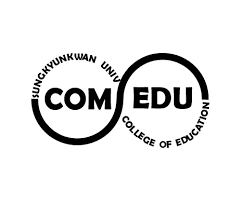

- 멋쟁이사자처럼
- 성균관대학교
- 컴퓨터교육과
컴퓨터교육과 (오진석)
컴퓨터교육과란 무엇인가?
1998년 성균관대학교 사범대학에 컴퓨터교육과가 설립된 이래 많은 정보교육과 융합기술 전문가를 배출하고 있다. 최근 인터넷 시대를 넘어 기술의 융복합화시대에 살고 있는 우리는 컴퓨터에 대한 많은 지식을 요구하고 있다. 이에 따라 컴퓨터 교육과에서는 각 중등학교의 컴퓨터 교육을 위한 교사로서의 역할과 국가적으로 필요로 하는 컴퓨터교육 및 융합기술 전문가를 양성하고 있다. 사실 컴퓨터교육이야말로 사회과학과 첨단기술이 융합하는 대표적인 융합기술의 하나이다. 특히 현장을 중시여기는 교육과정을 갖고 있어 컴퓨터와 교육공학의 기술을 접목하고 인접분야와의 확장과 융합이 가능하도록 하고 있다. 또한, 인터넷 시대의 디지털 문명에서 필수적으로 요구되는 인터넷윤리를 강화하여 仁義禮知를 실천하는 학과로 거듭나고 있다.